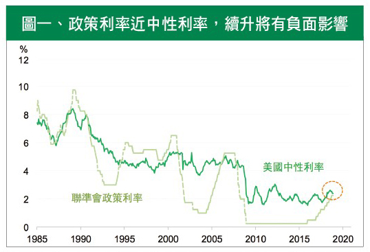
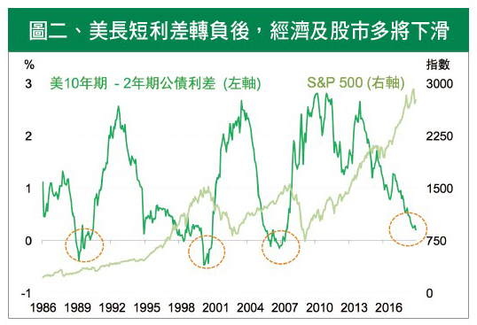
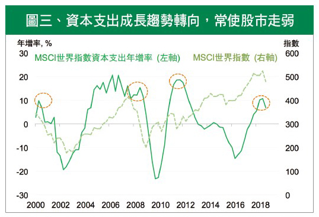

派對終曲響起，
等待安可契機？
高利率負面影響浮現，軟著陸可能升高，投資人須謹慎操作
小哥費玉清宣告2019年將告別歌壇，傳唱超過30年的晚安曲將成絕響。所有的開始，都將迎向結束，向觀眾道晚安之前的安可曲，總令人引頸期待。如果說2018年是全球經濟擴張演唱會的高潮，那麼2019年，就是讓市場知道該休息的晚安曲，終曲前的安可，總能讓人再回味一次曾經的美好。
從2008年聯準會實行貨幣寬鬆政策至今，全球股市創造一波超過10年的超級多頭行情。2015年底美國啟動升息，2017年底縮減資產負債表，資金自然地流回美國；再加上經濟數據表現亮眼，美股屢創歷史新高。然而，隨著2018年底美國經濟數據開始轉弱，市場不免擔心，2019年股市是否會有大幅修正的風險？或者，能穩住腳步，延續多頭力道？
美國升息緩而不止，須格外留意經濟衰退前兆
首先，我們先來觀察貨幣政策的變化。上個月聯準會主席鮑威爾的談話表示，目前利率略低於中性利率（見圖一）；所謂中性利率指的是，在此利率水準下的產出等於潛在產出，意謂經濟體已達成充分就業，更高的利率可能損害經濟成長。所以市場普遍解讀為，2019年升息腳步將放緩，不過鮑威爾言論轉鴿，也頗有給川普交代的意味；再者過去美國升息時常會讓政策利率略高於中性利率，所以聯準會升息步伐雖會減緩，但腳步卻還不會停下。然而, 利率過高對各項經濟數據的負面影響的確已慢慢浮現。
在利率揚升趨勢不變下，另一個值得關注的重點則是美國公債殖利率曲線轉平，甚至長短利差轉負，也就是短期利率高於長期利率的現象。這曾在1990年、2001年及2007年出現過三次（見圖二），此後皆伴隨經濟衰退及股市下跌。2018年12月發生五年期與三年期利差轉負時，引發市場恐慌，道瓊工業指數單日下跌799點。不過，過去三次五年期與三年期利差轉負發生之後，到真正經濟衰退前平均需要26個月，因此目前就要說「經濟即將衰退」，還言之過早。
然而，目前十年期跟二年期公債利差僅剩20點不到，只要聯準會再繼續升息，就很可能降至零以下。因此，今年內看到長短利差轉負的機率很大，投資人需特別留意。

註：中性利率為聯準會預估中性利率水準加上名目個人消費支出通膨率 (PCE)
資料來源：Bloomberg，NBER，San Francisco Fed

資料來源：Bloomberg
資本支出降溫，實體經濟疑慮多
利率揚升對實體經濟的影響在於，企業資金成本墊高，如果再遇到經濟逆風，企業就不願意增加投資。以半導體業這個科技業的火車頭來看，產業整體資本支出預估年減12%，而三星、英特爾、台積電等五大半導體公司預估更高於產業平均、將年減14%。從歷史走勢看來，資本支出由擴張轉收縮時，股市通常表現疲軟(見圖三)，因此也常被認為是大盤指數的領先指標。換言之，在整體公司資本支出下滑、獲利動能減弱時，股市今年恐將失去強勢的基本面支撐。
同時，全球製造業PMI六個月移動平均從去年五月開始轉弱，代表景氣放緩並削弱全球需求力道，更直接壓抑了與經濟發展密切相關的原物料價格。以原物料中最重要的石油看來，OPEC與俄羅斯協議減產，將使油價維持在每桶55到65美元，不至於崩跌；但另方面，中美貿易戰火持續延燒下，是否可能進一步降低石油需求，仍須密切觀察。

資料來源：Bloomberg
逢彈可減碼，持盈保泰安心過年
整體而言，2019年變化多、不是「豬」事大吉的一年，事件發展勢必難以預料。首先，美國升息還未到頂，資金雖由股轉債，但在轉移過程中，仍會因消息面在股市來回操作，如中美貿易戰完全達成和解或中美加大財政擴張力道，進而使投資人拾回樂觀情緒；再者，當美國更明確釋出暫緩升息風向球時，美元走弱也將提振新興股債匯同步反彈。換言之，股市震盪難免，甚至可能有多次強勢回升。
不過再多的反彈，若明年沒有伴隨PMI或經濟成長數據回溫，都將是落幕前的安可曲。當喧騰的派對終將結束，曲終人散前，請記得讓資金適時提前離場，即使無法「豬」光寶氣，也不要成為他人餐桌前美味的伊比利「豬」。
【揭露事項與免責聲明】
本報告為國泰世華銀行（下稱“本公司”）提供尊貴理財客戶之參考資料，並非針對特定客戶所作的投資建議，且在本報告撰寫過程中，並未考量讀者個別的財務狀況與需求，故本報告所提供的資訊無法適用於所有讀者。
本報告係根據本公司所取得的資訊加以彙集及研究分析，本公司並不保證各項資訊之完整性及正確性。本報告中所提出之意見係為本報告出版當時的意見，邇後相關資訊或意見若有變更，本公司將不會另行通知。本公司亦無義務持續更新本報告之內容或追蹤研究本報告所涵蓋之主題。本報告中提及的標的價格、價值及收益隨時可能因各種本公司無法控制之政治、經濟、市場等因素而產生變化。本報告中之各項預測，均係基於對目前所得資訊作合理假設下所完成，所以並不必然實現。本報告不得視為買賣有價證券或其他金融商品的要約或要約之引誘。
國泰金融集團（下稱“本集團”）所屬各公司可能個別基於特定目的且針對特定人士出具研究報告、提供口頭或書面的市場看法或投資建議（下稱“提供資訊”），鑑於提供資訊之單位、時間、對象及目的不同，本報告與本集團其他單位所提供資訊可能有不一致或相牴觸之情事；本集團所屬公司從事各項金融業務，包括但不限於銀行、保險、證券經紀、承銷、自有資金投資、資產管理、證券投資信託等。本集團各公司對於本報告所涵蓋之標的可能有投資或其他業務往來關係，各公司從事交易之方向亦可能與本報告不一致，讀者應審慎評估自身投資風險，自行決定投資方針，不應以前述不一致或相抵觸為由，主張本公司或本集團其他成員有侵害讀者權益之情事。